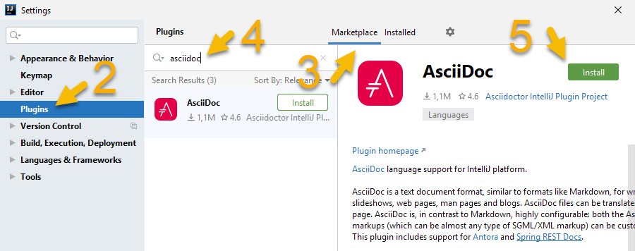

Recommended Plugins for Technical Writing
The plugins listed on this page improve the workflow for technical writers.
This is part of the step-by-step series to set up a technical writing environment with IntelliJ and the AsciiDoc plugin. See the page Setup for technical writing for an overview of all steps.
Prerequisites
This assumes that IntelliJ IDEA is already installed on the PC, a project is open and some first AsciiDoc content exists. See Installing IntelliJ for technical writing, Opening a project in IntelliJ IDEA and Editing an AsciiDoc file in IntelliJ for details.
Adding plugins to IntelliJ
A user can install additional plugins to add features to the IDE. Each additional plugin will slightly increase the memory usage and startup time of the IDE, so there’s always a small tradeoff.
- Steps to install a plugin
-
-
Open the IDE’s setting via .
This opens the following menu:Figure 1. Settings menu when installing from JetBrains Marketplace -
Select Plugins from the settings tree
-
Select Marketplace tab if it is not selected yet
-
Search for a plugin by its name, in this example 'asciidoc'.
-
Click on the button Install.
-
Once the download is complete, press the button Apply and restart the IDE if there is a prompt to do so.
-
Sometimes 3rd party plugin might need some time to be available for the latest version of IntelliJ, so they might prevent a user from upgrading to the latest version of IntelliJ. The plugins listed here are well-maintained and are usually available once a new version of IntelliJ is available.
If a plugin should suggested to other contributors to a plugin, consider adding it to the required plugins for the project and checking in that configuration to the repository. See Specifying required plugins for details.
Advanced Terminal with clickable file names
In the Terminal tool window, IntelliJ offers a command line interface.
A command like ls dir will show a list of files, but to open one of them the user would need to mark the text, copy it to the clipboard and paste it into a search field for search by file via Ctrl+Shift+N ⌘ ⇧ O.
To avoid the copy-and-paste of file names and to make the filenames clickable, install the plugin Awesome Console. It will also make URLs in the console clickable.
Advanced Grammar checking with Grazie Professional
The plugin Grazie already offers spell and grammar checking for several languages, and auto-detect the language of the text. For IntelliJ it is installed by default, so no additional action is necessary for the user.
For additional grammar checking, and typing suggestions, there’s the plugin Grazie Professional.
As a pre-requisite when running grammar inspections in large projects, increase the memory of the IDE as the IDE might otherwise be slow, or stall due to the lack of memory. Choose menu item and change this, for example, to 4096 MB.
It has built-in styleguides, and can be enhanced by custom Vale rules on a per-project basis.
Read more in Checking the Grammar for AsciiDoc content
Adding additional languages with Hunspell
While the Grazie and Grazie Professional plugins support a range of languages, the list is still rather short. At the time of writing this, Czech is, for example, missing.
The Hunspell community maintains a lot of freely available dictionaries.
The IntelliJ Spellchecker supports Hunspell dictionaries without an additional plugin. Add the spell checker via .
|
Additional status information about Git in the current repository
While IntelliJ includes standard support for Git, this plugin adds additional functionality like:
-
In-editor notification of who is the latest editor of the current line.
-
Status indicator in the lower right corner about changes
To add these functionalities, install the GitToolBox plugin. For additional information about the plugin, see the GitToolBox plugin’s manual.
|
At the time of writing, this plugin is free. In the near future, the author plans to offer additional features in a freemium model, meaning that users will need to pay to get functionality that exceeds the current functionality. |
Accessing archive contents in the IDE
When a repository contains a ZIP or tar file or another archive format, IntelliJ’s default installation can’t show their contents in the IDE.
To access the contents of an archive like a regular folder, install the Archive Browser plugin.
Editing Diagrams as Code with PlantUML
The PlantUML project supports different kinds of UML diagrams which can be edited and committed to a repository as plain text.
Those diagrams can be rendered in an AsciiDoc file using Asciidoctor Diagram or Kroki, see Diagrams in the preview for more details.
To include such a diagram in AsciiDoc content, use an example like this:
[plantuml]
----
include::mydiagram.puml[]
----To edit such a file with the extension .puml with a preview window, install the PlantUML diagram.
Editing Diagrams with diagrams.net in the IDE
The diagrams.net project (previously known as draw.io) offers a what-you-see-is-what-you-get graphical editor for diagrams. The files can be stored as XML, SVG or PNG. The special feature of SVGs and PNGs is that they can be displayed in a browser without conversion, yet they are still editable with the diagrams.net editor.
To edit such a file in the IDE, install the Diagrams.net plugin. While this plugin is still a very early version, it can support technical writers in managing their content.
Further reading
This is the final page of the guide. Return to the overview Setup for technical writing.